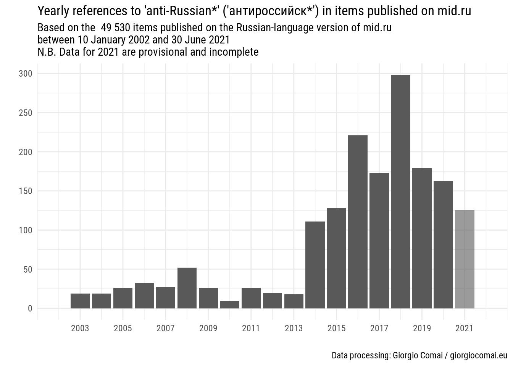

N.B. For a better formatted version of this post, consider following this link
References to ‘anti-Russian sentiments’ or ‘Russophobia’ - have a long history that dates back to the 19th century (Feklyunina 2012; Darczewska and Żochowski 2015). However, in recent years references to the alleged spread of ‘Russophobia’ in the West have apparently become more common and more politically consequential, in particular after Russia’s annexation of Crimea and the war in the Donbas (Darczewska and Żochowski 2015). A quantitative analysis of references to ‘Russophobia’ in statements by Russia’s Ministry of foreign affairs has confirmed that the expression was barely used before 2012, but featured much more often in official statements in particular since 2014 (Robinson 2019).
In this post, I will provide a brief overview of the frequency of references to ‘Russophobia’ or ‘anti-Russian’ sentiments in official statements and press releases issues by the Kremlin, the Russian Ministry of Foreign Affairs, as well as in the textual version of news segments published by Russia’s first channel (Pervy Kanal).
In order to let the reader gauge the tone of such references in context, I will also include tables with the five words preceding and following the reference to ‘Russophobia’ as well as a link to the specific occasion where the reference was found.
I have published the textual dataset based on the Kremlin’s website on Discuss Data. You can download the full dataset in different formats from there, and find a detailed note on how it was created. I have previously discussed the usefulness of this approach in a dedicated article (Comai 2017).
The graphs included in this post are based on the absolute number of matches of relevant keywords, not their relative frequency as a share of total word count, even if the number of publications is not constant throughout the period under analysis. Additional graphs with the average number of publications per day for each source are included for reference. Analytically, relative word-count would not lead to significantly different conclusions.
Preliminary quality checks have not raised major inconsistencies or problems in the data collection process. Some issues possibly due to the way contents are archived by the sources (e.g. occasional duplicate posts) are cannot however be completely excluded until more thorough checks are conducted.
Finally, here are links to a fully interactive version of the datasets mentioned in this post, allowing researchers to test the frequency of alternative expressions that may be used to express similar meaning. I have not yet finalised building the interface, so it may be slow to respond, some functions may not work at all, and there may be inconsistencies in the reported data. I still decided to share it publicly, as they may be of some use even in their current state, but use with caution.
Preliminary observations
There are only occasional references to “anti-Russian” sentiments and “Russophobia” in official statements and in news segments aired by Pervy Kanal before 2014. Such references however have become much more common starting with 2014 and until 2019. The frequency of such references has decreased in 2020, but provisional data for the first half 2021 may hint at a new increase.
The Kremlin
References to “Russophobia” were basically not to be found before 2014, and their sudden appearance corresponds to events in Ukraine.
However, references to “anti-Russian” started to appear earlier, in 2009. The reader should keep in mind that between 2008 and 2012 Dmitri Medvedev, not Vladimir Putin, was president of the Russian Federation, which likely had an impact on word choices.

The following graph shows both “anti-russian” and “Russophobia” with the same scale.
Kremlin.ru, English version
I include for reference a version of the same graph, based on the English language version of Kremlin.ru, which has fewer contents available. This dataset is updated only to 31 December 2020, and is exactly the same I made available on Discuss Data and as a data package for the R programming language
The Russian Ministry of foreign affairs
This section presents the same graphs as above, first for the Russian language version of mid.ru, then for the English language version.

Russian MFA, English version
Russia’s First Channel - Pervy Kanal
This dataset is based on all news items published on the websites of Russia’s first channel: Pervy Kanal. It is a much larger dataset, including 404 060 items published between 22 December 1998 and 30 June 2021. It mostly does not include full transcripts of talk shows, but rather transcripts of news segments.
Frequency of publications in each of the sources

References
Comai, Giorgio. 2017. “Quantitative Analysis of Web Content in Support of Qualitative Research. Examples from the Study of Post-Soviet de Facto States.” Studies of Transition States and Societies 9 (1).
Darczewska, Jolanta, and Piotr Żochowski. 2015. Russophobia in the Kremlin’s Strategy. A Weapon of Mass Destruction. Punkt Widzenia, Numer 56, październik 2015. Warszawa: Ośrodek Studiów Wschodnich im. Marka Karpia.
Feklyunina, Valentina. 2012. “Constructing Russophobia.” In Russia’s Identity in International Relations, edited by Ray Taras, 91–109. London; New York: Routledge.
Robinson, Neil. 2019. “Russophobia in Official Russian Political Discourse.” De Europa 2 (2): 61–77.